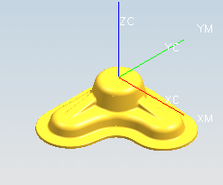

预计完成此练习需要：7–9 分钟
在这个练习中，您将创建两个文本注释，然后将它们放置在部件上在部件上雕刻两个文本注释信息。您先要学习如何创建和放置您想要雕刻的文本，然后学习如何创建平面文本雕刻和轮廓文本雕刻工序。

开始 平面文本雕刻和轮廓文本雕刻
要获取更多信息，参见：
使用命令查找器查找轮廓文本
帮助→CAM (加工)→铣加工→铣削几何体→制图文本几何体
帮助→CAM (加工)→铣加工→铣削几何体→制图文本几何体→创建雕刻的制图文本